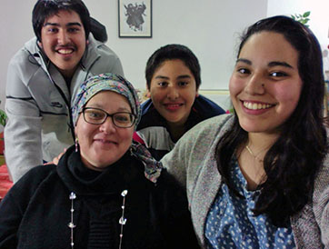

Shalom shalem queridos hermanos, mi nombre es Sarah Benozillo y desde Israel queremos mis hijos y yo dar Gracias a Dios por permitirnos servirle aquí en esta hermosa y Bendita Tierra donde Yeshua cumplió su ministerio y llevo a cabo el servicio mas hermoso por Amor al Padre y a nosotros.
También a nuestros pastores Armando y Martha Alducin por su integridad y por su ejemplo que a sido de inspiración para mi vida y un ejemplo de amor para hijos.
Nuestro trabajo en Israel es presentar el Amor de Yeshua con nuestro testimonio y trabajo tanto con actos como hablando de su amor.
Compartiendo el poder del arrepentimiento y la necesidad que tenemos todos de la Luz de la Palabra y de Yeshua.
Así que además de ser hogar para pequeños con necesidades especiales. Yo me dedico al trabajo con los ancianos sobrevivientes de el Holocausto a los cuales Dios me a permitido ministrar acompañar y amar.
Mi hijo mayor David esta sirviendo en el ejercito de Israel guardando Jerusalem.
Nimsi y Deborah sirven en la alabanza de el grupo de jóvenes de la congregación, además Nimsi se encarga de el sonido y de equipo técnico y Deborah también se ocupa de la preparación de los alimentos que se sirven a los jóvenes.
Peniel de 11 años es apasionado estudioso de La Palabra de Dios.
Y todos como familia muy agradecidos a Dios por el merito que nos a otorgado de ser Sus siervos.
Unidos en el Amor de Yeshua les Bendecimos.
“¡Mirad cuán bueno y cuán delicioso es
Habitar los hermanos juntos en armonía!
Porque allí envía Jehová bendición, y vida eterna.” Salmo133
Escríbenos a la siguiente dirección de correo:
dadenipe@gmail.com